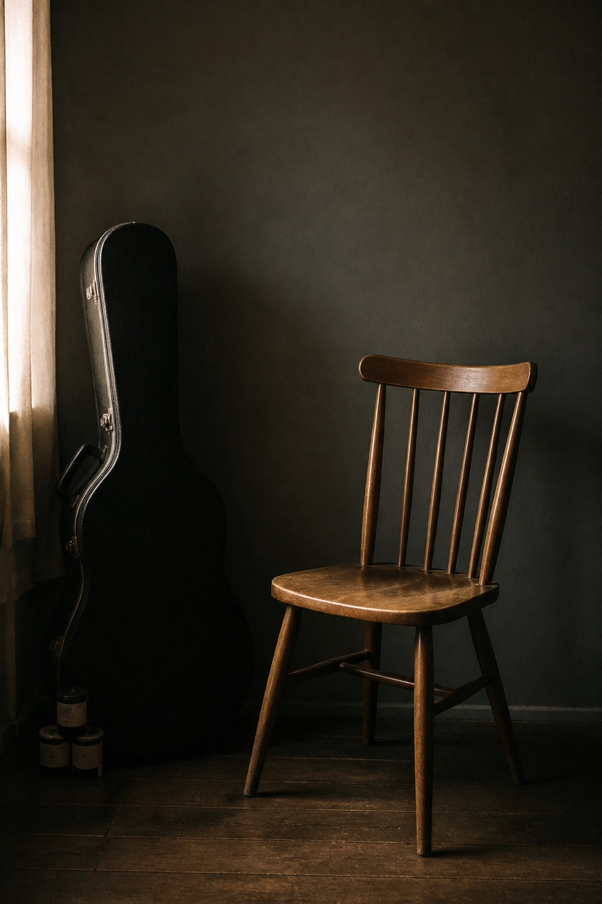

About
The person behind the archive.

A short introduction
I’m Yuhe. Outside my academic work, I return to singing, guitar, rock music, film photography, old cameras, and the quiet habit of collecting the objects and fragments around them.
I have lived between different places, and much of what appears here begins with trying to notice what changes—and what remains familiar.
Why After Hours
After Hours is a place for music, photographs, instruments, unfinished ideas and other things I return to outside ordinary working hours. It is less a portfolio than a personal archive—one that can remain incomplete and continue to grow.